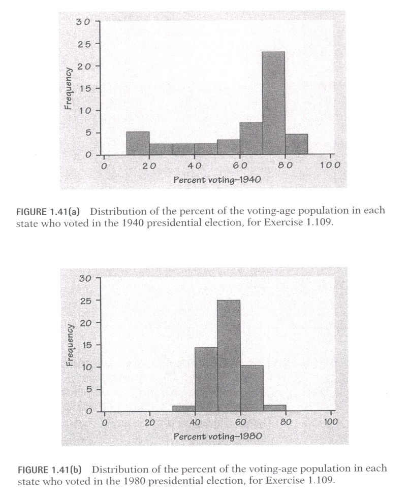

- Determine the mean magazine circulation
for the ``Weider'' empire.
- Determine the median magazine circulation for the ``Weider'' empire.
- Assume you are the press speaker of the ``Smith'' magazine group that also has
10 magazines with a mean circulation of 310,000 and a median circulation of 300,000.
Which number(s) would you report when comparing your group with the ``Weider'' empire.
Explain.
- Calculate the range of the magazine circulation for the ``Weider'' empire.
- Construct a stem-and-leaf display of the magazine circulation.
- Are you happy with the data provided by USA Today? Isn't some
important information missing?
- Do you think that the 1.1 million circulation for ``Shape'' is the
absolute truth? Think of possible manipulations (hint: ``TV Guide'' published
4 collector's covers of Seinfeld in their May 9-15, 1998, issue - how might this
effect the circulation?).
- Assume the
``Weider'' group only possesses these 10 magazines. Calculate
the variance using our shortcut formula
and make a clear statement whether you are calculating a population
or a sample variance. (Hint: It might be useful to know that
1.1 million can be expressed as 1.1E06, 450,000 as 0.45E06, etc.).

- Exercise 1.109 (1 Point):
Voting patterns in the United States were affected by many social changes in the years between 1940 and 1980. Prior to the civil rights movement of the 1960s, blacks were effectively prevented from voting in some southern states. Until 1971, citizens between the ages of 18 and 21 could not vote in national elections. Figure 1.41(a) is a histogram of the percent of the voting-age population who actually voted in the 1940 presidential election in each of the 48 states that existed at that time. Figure 1.41(b) shows the distribution of the percent of the voting-age population who voted in the 1980 presidential election in the 50 states and the District of Columbia. To allow a direct comparison, the horizontal and vertical scales and the class widths are the same for the two histograms. Describe the most important changes in the shape of the distribution between 1940 and 1980.

- Exercise 1.110 (2 Points):
Deborah is a student at a midwestern college who lives off campus. She records the time she takes to drive to school each morning during the fall term. Here are the times (in minutes) for 42 consecutive weekdays, with the dates in order along the rows:(a) Make a graph of these drive times. Is the distribution roughly symmetric, clearly skewed, or neither? Are there any clear outliers?8.25 7.83 8.30 8.42 8.50 8.67 8.17 9.00 9.00 8.17 7.92 9.00 8.50 9.00 7.75 7.92 8.00 8.08 8.42 8.75 8.08 9.75 8.33 7.83 7.92 8.58 7.83 8.42 7.75 7.42 6.75 7.42 8.50 8.67 10.17 8.75 8.58 8.67 9.17 9.08 8.83 8.67
(b) The data show three unusual situations: the day after Thanksgiving (no traffic on campus); a delay due to an accident; and a day with icy roads. Identify and remove these three observations, and give a numerical summary of the remaining 39 drive times.
(c) Are these data reasonably close to having a normal distribution when the unusual days are removed? How do you know?
(d) Make a time plot of the drive times. Do the data show any trend? For example, do drive times increase over time because the weather gets worse later in the term?
- Exercise 1.111 (1 Point):
The 1996 Statistical Abstract of the United States reports FBI data on murders for 1994. In that year, 57.8% of all murders were committed with handguns, 12.2% with other firearms, 12.7% with knives, 5.3% with ``personal weapons'' (usually the hands or feet), and 4.1% with blunt objects. Make a graph to display these data. Do you need an ``other methods'' category? [We have already seen this solution - just recall how the ideal solution looks like and rescetch it without looking at the old handouts. No need to formally answer this questions - a free point for everyone ;-)
- Exercise 1.114 (1 Point):
The Chapin Social Insight Test evaluates how accurately the subject appraises other people. In the reference population used to develop the test, scores are approximately normally distributed with mean 25 and standard deviation 5. The range of possible scores is 0 to 41.
(a) What proportion of the population has scores below 20 on the Chapin test?
(b) What proportion has scores below 10?
(c) How high a score must you have in order to be in the top quarter of the population in social insight?
- Exercise 1.115 (1 Point):
The scores of a reference population on the Wechsler Intelligence Scale for Children (WISC) are normally distributed with mu = 100 and sigma = 15. A school district classifies children as ``gifted'' if their WISC score exceeds 135. There are 1300 sixth graders in the school district. About how many of them are gifted?